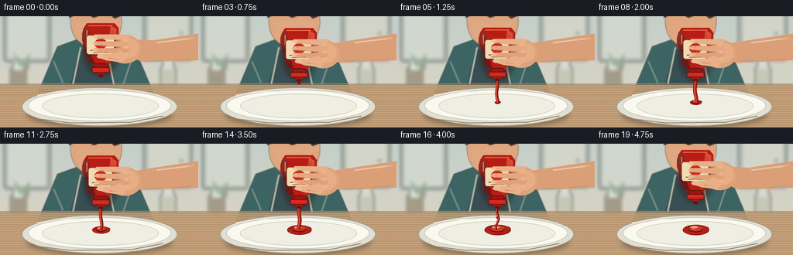
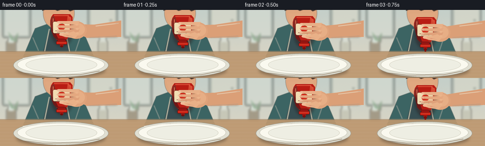

CODING AGENTS AS PIXEL WORLD MODELS
traex/GPT-5.6-Sol · motion_rationality_0027
点击播放 · 原生 RGB 像素
逐轮保存的候选
回放视频、检查图与代码变化。
每份候选均可单独播放。实际图片检查记录在下方工具轨迹中。
候选 01播放与检查图
点击播放 · 原生 RGB 像素


展开代码变化
--- 上一保存版本
+++ 本次保存版本
@@ -0,0 +1,241 @@
+from pathlib import Path
+import math
+import numpy as np
+from PIL import Image, ImageDraw, ImageFont, ImageFilter
+import artifact_io
+
+# Procedural 2-D cinematic illustration, rendered large and downsampled for clean detail.
+W,H,N,S = 256,144,20,4
+SW,SH=W*S,H*S
+HERE=Path(__file__).resolve().parent
+
+def sc(v): return int(round(v*S))
+def box(b): return tuple(sc(x) for x in b)
+def pts(p): return [(sc(x),sc(y)) for x,y in p]
+
+def rgba_layer(): return Image.new('RGBA',(SW,SH),(0,0,0,0))
+def ellipse(im,b,fill,outline=None,width=1):
+ d=ImageDraw.Draw(im); d.ellipse(box(b),fill=fill,outline=outline,width=sc(width) if outline else 1)
+def polygon(im,p,fill): ImageDraw.Draw(im).polygon(pts(p),fill=fill)
+def line(im,p,fill,width, joint='curve'): ImageDraw.Draw(im).line(pts(p),fill=fill,width=sc(width),joint=joint)
+def rect(im,b,fill,rad=0,outline=None,width=1):
+ d=ImageDraw.Draw(im)
+ if rad: d.rounded_rectangle(box(b),radius=sc(rad),fill=fill,outline=outline,width=sc(width))
+ else: d.rectangle(box(b),fill=fill,outline=outline,width=sc(width))
+
+def composite(base,lay): return Image.alpha_composite(base,lay)
+
+def draw_background(i):
+ # Warm kitchen, intentionally soft so foreground action reads immediately.
+ yy=np.linspace(0,1,SH)[:,None,None]
+ top=np.array([196,207,201])[None,None,:]; bot=np.array([225,215,195])[None,None,:]
+ arr=np.repeat((top*(1-yy)+bot*yy),SW,axis=1)
+ rng=np.random.default_rng(717)
+ arr=np.clip(arr+rng.normal(0,1.2,(SH,SW,1)),0,255).astype(np.uint8)
+ im=Image.fromarray(arr,'RGB').convert('RGBA')
+ bg=rgba_layer()
+ # cabinet and backsplash shapes
+ rect(bg,(5,-8,65,59),(124,139,133,130),4)
+ rect(bg,(9,-3,61,55),(214,220,211,150),3)
+ line(bg,[(61,0),(61,59)],(105,114,108,100),1)
+ rect(bg,(185,-7,248,57),(128,137,128,120),4)
+ rect(bg,(190,-3,244,53),(217,216,200,155),3)
+ ellipse(bg,(232,20,236,24),(94,100,91,130))
+ # blurred jars/plant on rear counter
+ rect(bg,(13,66,34,91),(110,91,65,120),2)
+ rect(bg,(17,59,30,70),(220,235,226,150),3)
+ polygon(bg,[(28,65),(38,48),(36,69)],(74,118,78,115))
+ polygon(bg,[(25,65),(17,46),(29,62)],(65,126,76,110))
+ rect(bg,(207,65,227,91),(187,188,170,130),3)
+ rect(bg,(210,57,224,68),(222,228,219,140),2)
+ bg=bg.filter(ImageFilter.GaussianBlur(sc(2.2)))
+ im=composite(im,bg)
+ # Person behind the action: face, neck and muted teal shirt/apron.
+ person=rgba_layer()
+ ellipse(person,(91,-30,157,43),(222,166,126,255))
+ # jaw/chin shading
+ polygon(person,[(96,8),(102,31),(119,42),(140,34),(151,6)],(224,168,128,255))
+ ellipse(person,(111,27,139,58),(207,145,108,255))
+ # hair cropped at top
+ polygon(person,[(89,2),(93,-22),(150,-28),(160,-2),(148,3),(139,-4),(121,2),(107,-5)],(67,51,44,255))
+ # shirt and apron
+ polygon(person,[(74,39),(99,30),(121,49),(142,32),(174,42),(199,101),(48,101)],(60,100,99,255))
+ polygon(person,[(103,43),(137,43),(153,101),(87,101)],(49,73,77,245))
+ line(person,[(104,40),(94,88)],(194,188,164,220),2)
+ line(person,[(137,40),(147,89)],(194,188,164,220),2)
+ # soft shirt folds
+ line(person,[(69,58),(81,86)],(42,77,76,130),2)
+ line(person,[(170,55),(159,88)],(39,75,75,120),2)
+ person=person.filter(ImageFilter.GaussianBlur(sc(.45)))
+ im=composite(im,person)
+ # Counter surface
+ counter=rgba_layer()
+ rect(counter,(0,87,256,144),(188,151,111,255))
+ # subtle wood gradient bands
+ for y in range(88,145,3):
+ c=(205+((y*3)%7),169+((y*2)%6),125+((y*5)%5),42)
+ line(counter,[(0,y),(256,y+.3)],c,.5)
+ line(counter,[(0,88),(256,88)],(112,89,67,90),1)
+ im=composite(im,counter)
+ return im
+
+def draw_plate(im):
+ # Contact shadow anchors plate to counter.
+ sh=rgba_layer(); ellipse(sh,(35,111,222,143),(53,38,26,105)); sh=sh.filter(ImageFilter.GaussianBlur(sc(3.5))); im=composite(im,sh)
+ p=rgba_layer()
+ ellipse(p,(28,92,229,142),(224,223,210,255),(159,157,145,255),1)
+ ellipse(p,(36,95,221,136),(250,249,239,255),(202,200,186,255),1)
+ ellipse(p,(54,100,205,132),(238,238,227,255),(213,211,196,255),1)
+ # porcelain highlight and lower rim shade
+ line(p,[(48,102),(75,98),(105,97)],(255,255,252,205),1.2)
+ line(p,[(51,133),(91,138),(169,137),(210,129)],(154,153,144,80),1.3)
+ return composite(im,p)
+
+def draw_ketchup_on_plate(im,i):
+ k=rgba_layer()
+ # Ketchup reaches plate during frame 5. It accumulates monotonically thereafter.
+ amount=max(0.0,min(1.0,(i-4)/11.0))
+ if amount>0:
+ cx=130.5; cy=111.5
+ # broad glossy pool assembled from overlapping, irregular lobes
+ rx=2+15*amount; ry=1.4+5.4*amount
+ ellipse(k,(cx-rx,cy-ry,cx+rx,cy+ry),(152,23,15,255))
+ for j in range(7):
+ a=j*2.399
+ rr=(2.0+6.0*amount)*(0.65+0.35*math.sin(j*4.1)**2)
+ ox=math.cos(a)*(rx*.62); oy=math.sin(a)*(ry*.53)
+ ellipse(k,(cx+ox-rr,cy+oy-rr*.38,cx+ox+rr,cy+oy+rr*.38),(174+int(8*math.sin(j)),28,17,245))
+ # piled spiral gives the deposited sauce volume rather than a flat red disc
+ coil=[]
+ turns=1.6+2.3*amount
+ for q in range(80):
+ a=q/79*math.tau*turns
+ r=(1+8.5*amount)*(1-q/95)
+ coil.append((cx+math.cos(a)*r,cy-math.sin(a)*r*.34-1.2*amount))
+ line(k,coil,(126,17,12,255),3.4)
+ line(k,[(x,y-.65) for x,y in coil],(211,49,29,235),1.15)
+ ellipse(k,(cx-rx*.42,cy-ry*.78,cx+rx*.15,cy-ry*.28),(244,94,57,150))
+ return composite(im,k)
+
+def bottle_geometry(i):
+ # Down, squeeze, then lift. Narrower middle tracks pressure applied by fingers.
+ if i<3: down=-5+2*i
+ elif i<17: down=1+0.35*math.sin(i*.75)
+ else: down=1-(i-16)*2.3
+ squeeze=max(0,min(1,(i-1)/4))*max(0,min(1,(20-i)/4))
+ tilt=-1.5+0.5*math.sin(i*.55)
+ return down,squeeze,tilt
+
+def draw_arm_behind(im,i,down):
+ a=rgba_layer()
+ # Right forearm enters from frame right, tapered naturally toward wrist.
+ polygon(a,[(257,22),(257,57),(184,60+down*.15),(162,54+down),(166,35+down),(198,31)],(219,159,119,255))
+ line(a,[(202,34),(250,28)],(243,189,147,145),2)
+ line(a,[(187,58),(247,55)],(159,101,73,80),1)
+ # palm behind bottle
+ ellipse(a,(139,29+down,183,66+down),(223,163,123,255))
+ ellipse(a,(151,33+down,179,59+down),(231,174,133,255))
+ return composite(im,a)
+
+def draw_bottle(im,i,down,squeeze,tilt):
+ b=rgba_layer(); y=down
+ # soft bottle drop-shadow
+ sh=rgba_layer(); ellipse(sh,(108,17+y,154,82+y),(60,11,8,95)); sh=sh.filter(ImageFilter.GaussianBlur(sc(3))); im=composite(im,sh)
+ # Body is inverted: wide flat bottle base at top, tapering to cap/nozzle below.
+ pinch=4.1*squeeze
+ body=[(108,20+y),(112,14+y),(148,14+y),(153,20+y),(153,29+y),
+ (149,36+y),(149-pinch,52+y),(143,64+y),(139,69+y),
+ (121,69+y),(116,63+y),(111+pinch,51+y),(106,36+y),(106,27+y)]
+ polygon(b,body,(184,29,20,255))
+ # deep red side shade and warm translucent center
+ polygon(b,[(108,21+y),(114,17+y),(117,32+y),(116+pinch,52+y),(123,66+y),(119,67+y),(113,61+y),(108+pinch,49+y),(106,32+y)],(122,18,16,210))
+ polygon(b,[(143,17+y),(150,21+y),(150,34+y),(145-pinch,50+y),(142,62+y),(136,67+y),(139,43+y)],(221,46,27,180))
+ line(b,[(114,17+y),(145,17+y)],(249,89,62,190),1.3)
+ line(b,[(112,23+y),(112,35+y)],(249,102,74,145),1.4)
+ # Cream label and tomato icon, visibly distorted by squeeze width.
+ lx=111+pinch*.6; rx=148-pinch*.6
+ rect(b,(lx,29+y,rx,55+y),(245,225,182,245),4,(119,31,24,170),1)
+ ellipse(b,(122,34+y,138,47+y),(207,40,25,255))
+ polygon(b,[(130,34+y),(126,31+y),(130,32+y),(134,30.5+y),(133,35+y)],(47,111,52,255))
+ # label highlight marks
+ line(b,[(117+pinch*.4,49+y),(142-pinch*.4,49+y)],(132,52,36,190),1)
+ line(b,[(120+pinch*.4,52+y),(139-pinch*.4,52+y)],(190,77,50,150),.7)
+ # neck, flip-cap, and dispensing nozzle
+ rect(b,(121,66+y,139,73+y),(155,22,18,255),2,(99,13,12,220),1)
+ rect(b,(118.5,71+y,141.5,78+y),(213,37,23,255),2,(112,17,15,255),1)
+ line(b,[(121,74+y),(139,74+y)],(249,83,53,165),.8)
+ polygon(b,[(126,78+y),(134,78+y),(133,83+y),(127,83+y)],(167,23,17,255))
+ ellipse(b,(127,80+y,133,84+y),(111,14,11,255))
+ return composite(im,b)
+
+def draw_hand_front(im,i,down,squeeze):
+ h=rgba_layer(); y=down
+ # Four finger segments wrap over the bottle. Their tips move inward as squeeze rises.
+ tip=2.6*squeeze
+ finger_cols=[(232,176,136,255),(228,168,128,255),(224,161,122,255)]
+ ys=[31.5,40.5,49.3]
+ for j,fy in enumerate(ys):
+ poly=[(168,fy-3+y),(165,fy+3.3+y),(144,fy+4+y),(124+tip,fy+2.4+y),(119+tip,fy-.4+y),(122+tip,fy-3.1+y),(144,fy-3.2+y)]
+ polygon(h,poly,finger_cols[j])
+ line(h,[(128+tip,fy-1.7+y),(122+tip,fy-.5+y)],(250,204,166,130),.8)
+ line(h,[(125+tip,fy+2+y),(145,fy+3+y)],(159,98,72,75),.7)
+ # fingernail near tip
+ ellipse(h,(119.5+tip,fy-2.0+y,126+tip,fy+1.7+y),(240,190,157,220))
+ # Thumb braces the lower bottle opposite the fingers.
+ polygon(h,[(166,56+y),(158,65+y),(137,62+y),(125-tip*.25,58+y),(126,54+y),(143,54+y),(155,50+y)],(233,176,135,255))
+ line(h,[(140,59+y),(155,61+y)],(249,204,166,120),1)
+ ellipse(h,(125-tip*.25,54.5+y,134-tip*.15,59.5+y),(246,197,161,235))
+ # knuckle highlights
+ for x0,y0 in [(159,34),(160,43),(160,52)]: ellipse(h,(x0,y0+y,x0+6,y0+4+y),(245,193,153,80))
+ return composite(im,h)
+
+def draw_stream(im,i,down):
+ st=rgba_layer()
+ nozzle_y=83+down
+ # tip bead before flow begins
+ if i in (2,3):
+ r=1.2+(i-2)*.8; ellipse(st,(130-r,nozzle_y-1,130+r,nozzle_y+2*r),(137,15,10,255))
+ # flow is continuous after emerging, then pinches and breaks while bottle lifts.
+ if 4 <= i <= 17:
+ if i==4: endy=98
+ else: endy=111.5
+ if i<=14: width=3.2+0.35*math.sin(i)
+ else: width=max(.9,3.1-(i-14)*.65)
+ p=[]
+ steps=28
+ for q in range(steps):
+ f=q/(steps-1); y=nozzle_y+(endy-nozzle_y)*f
+ x=130+math.sin(f*5.3+i*.37)*(.35+1.15*f)
+ if i>=16: x += math.sin(f*9+i)*.8
+ p.append((x,y))
+ line(st,p,(102,12,9,255),width+1.2)
+ line(st,[(x-.35,y) for x,y in p],(205,35,20,255),width)
+ line(st,[(x-.75,y) for x,y in p],(244,83,45,190),max(.45,width*.24))
+ if i>=16:
+ # necking point communicates the stream is stopping rather than reversing.
+ ellipse(st,(128.8,94,131.1,97),(183,24,15,255))
+ if i==18:
+ # final detached droplet falls toward the completed dollop
+ ellipse(st,(129,103,132,107),(177,24,15,255))
+ ellipse(st,(129.5,103,130.5,104),(244,91,49,180))
+ return composite(im,st)
+
+def render(i):
+ im=draw_background(i)
+ im=draw_plate(im)
+ im=draw_ketchup_on_plate(im,i)
+ down,squeeze,tilt=bottle_geometry(i)
+ im=draw_arm_behind(im,i,down)
+ im=draw_bottle(im,i,down,squeeze,tilt)
+ im=draw_hand_front(im,i,down,squeeze)
+ im=draw_stream(im,i,down)
+ # slight depth/glow and final high-quality downsample
+ rgb=im.convert('RGB').resize((W,H),Image.Resampling.LANCZOS)
+ return np.asarray(rgb,dtype=np.uint8)
+
+def main():
+ frames=np.stack([render(i) for i in range(N)],axis=0)
+ artifact_io.save(frames,HERE)
+ print(f'saved {frames.shape} RGB frames')
+
+if __name__=='__main__': main()
可观测工具轨迹
实际执行的命令与返回图片。
命令 1exit 0
/bin/bash -lc "cat prompt.txt && printf '\\n---RULES---\\n' && cat GENERATION_RULES.md && printf '\\n---SPEC---\\n' && cat task_spec.json"
命令 2exit 0
/bin/bash -lc "find . -maxdepth 2 -type f -printf '%P\\n' | sort"
命令 3exit 0
/bin/bash -lc "which ffmpeg; which python3; python3 - <<'PY'
try:
import PIL; print('PIL',PIL.__version__)
except Exception as e: print('no PIL',e)
try:
import cv2; print('cv2',cv2.__version__)
except Exception as e: print('no cv2',e)
try:
import numpy; print('numpy',numpy.__version__)
except Exception as e: print('no numpy',e)
PY"命令 4exit 0
/bin/bash -lc 'cat artifact_io.py'
命令 5exit 0
/bin/bash -lc "cat > generate.py <<'PY'
from pathlib import Path
import math
import numpy as np
from PIL import Image, ImageDraw, ImageFont, ImageFilter
import artifact_io
# Procedural 2-D cinematic illustration, rendered large and downsampled for clean detail.
W,H,N,S = 256,144,20,4
SW,SH=W*S,H*S
HERE=Path(__file__).resolve().parent
def sc(v): return int(round(v*S))
def box(b): return tuple(sc(x) for x in b)
def pts(p): return [(sc(x),sc(y)) for x,y in p]
def rgba_layer(): return Image.new('RGBA',(SW,SH),(0,0,0,0))
def ellipse(im,b,fill,outline=None,width=1):
d=ImageDraw.Draw(im); d.ellipse(box(b),fill=fill,outline=outline,width=sc(width) if outline else 1)
def polygon(im,p,fill): ImageDraw.Draw(im).polygon(pts(p),fill=fill)
def line(im,p,fill,width, joint='curve'): ImageDraw.Draw(im).line(pts(p),fill=fill,width=sc(width),joint=joint)
def rect(im,b,fill,rad=0,outline=None,width=1):
d=ImageDraw.Draw(im)
if rad: d.rounded_rectangle(box(b),radius=sc(rad),fill=fill,outline=outline,width=sc(width))
else: d.rectangle(box(b),fill=fill,outline=outline,width=sc(width))
def composite(base,lay): return Image.alpha_composite(base,lay)
def draw_background(i):
# Warm kitchen, intentionally soft so foreground action reads immediately.
yy=np.linspace(0,1,SH)[:,None,None]
top=np.array([196,207,201])[None,None,:]; bot=np.array([225,215,195])[None,None,:]
arr=np.repeat((top*(1-yy)+bot*yy),SW,axis=1)
rng=np.random.default_rng(717)
arr=np.clip(arr+rng.normal(0,1.2,(SH,SW,1)),0,255).astype(np.uint8)
im=Image.fromarray(arr,'RGB').convert('RGBA')
bg=rgba_layer()
# cabinet and backsplash shapes
rect(bg,(5,-8,65,59),(124,139,133,130),4)
rect(bg,(9,-3,61,55),(214,220,211,150),3)
line(bg,[(61,0),(61,59)],(105,114,108,100),1)
rect(bg,(185,-7,248,57),(128,137,128,120),4)
rect(bg,(190,-3,244,53),(217,216,200,155),3)
ellipse(bg,(232,20,236,24),(94,100,91,130))
# blurred jars/plant on rear counter
rect(bg,(13,66,34,91),(110,91,65,120),2)
rect(bg,(17,59,30,70),(220,235,226,150),3)
polygon(bg,[(28,65),(38,48),(36,69)],(74,118,78,115))
polygon(bg,[(25,65),(17,46),(29,62)],(65,126,76,110))
rect(bg,(207,65,227,91),(187,188,170,130),3)
rect(bg,(210,57,224,68),(222,228,219,140),2)
bg=bg.filter(ImageFilter.GaussianBlur(sc(2.2)))
im=composite(im,bg)
# Person behind the action: face, neck and muted teal shirt/apron.
person=rgba_layer()
ellipse(person,(91,-30,157,43),(222,166,126,255))
# jaw/chin shading
polygon(person,[(96,8),(102,31),(119,42),(140,34),(151,6)],(224,168,128,255))
ellipse(person,(111,27,139,58),(207,145,108,255))
# hair cropped at top
polygon(person,[(89,2),(93,-22),(150,-28),(160,-2),(148,3),(139,-4),(121,2),(107,-5)],(67,51,44,255))
# shirt and apron
polygon(person,[(74,39),(99,30),(121,49),(142,32),(174,42),(199,101),(48,101)],(60,100,99,255))
polygon(person,[(103,43),(137,43),(153,101),(87,101)],(49,73,77,245))
line(person,[(104,40),(94,88)],(194,188,164,220),2)
line(person,[(137,40),(147,89)],(194,188,164,220),2)
# soft shirt folds
line(person,[(69,58),(81,86)],(42,77,76,130),2)
line(person,[(170,55),(159,88)],(39,75,75,120),2)
person=person.filter(ImageFilter.GaussianBlur(sc(.45)))
im=composite(im,person)
# Counter surface
counter=rgba_layer()
rect(counter,(0,87,256,144),(188,151,111,255))
# subtle wood gradient bands
for y in range(88,145,3):
c=(205+((y*3)%7),169+((y*2)%6),125+((y*5)%5),42)
line(counter,[(0,y),(256,y+.3)],c,.5)
line(counter,[(0,88),(256,88)],(112,89,67,90),1)
im=composite(im,counter)
return im
def draw_plate(im):
# Contact shadow anchors plate to counter.
sh=rgba_layer(); ellipse(sh,(35,111,222,143),(53,38,26,105)); sh=sh.filter(ImageFilter.GaussianBlur(sc(3.5))); im=composite(im,sh)
p=rgba_layer()
ellipse(p,(28,92,229,142),(224,223,210,255),(159,157,145,255),1)
ellipse(p,(36,95,221,136),(250,249,239,255),(202,200,186,255),1)
ellipse(p,(54,100,205,132),(238,238,227,255),(213,211,196,255),1)
# porcelain highlight and lower rim shade
line(p,[(48,102),(75,98),(105,97)],(255,255,252,205),1.2)
line(p,[(51,133),(91,138),(169,137),(210,129)],(154,153,144,80),1.3)
return composite(im,p)
def draw_ketchup_on_plate(im,i):
k=rgba_layer()
# Ketchup reaches plate during frame 5. It accumulates monotonically thereafter.
amount=max(0.0,min(1.0,(i-4)/11.0))
if amount>0:
cx=130.5; cy=111.5
# broad glossy pool assembled from overlapping, irregular lobes
rx=2+15*amount; ry=1.4+5.4*amount
ellipse(k,(cx-rx,cy-ry,cx+rx,cy+ry),(152,23,15,255))
for j in range(7):
a=j*2.399
rr=(2.0+6.0*amount)*(0.65+0.35*math.sin(j*4.1)**2)
ox=math.cos(a)*(rx*.62); oy=math.sin(a)*(ry*.53)
ellipse(k,(cx+ox-rr,cy+oy-rr*.38,cx+ox+rr,cy+oy+rr*.38),(174+int(8*math.sin(j)),28,17,245))
# piled spiral gives the deposited sauce volume rather than a flat red disc
coil=[]
turns=1.6+2.3*amount
for q in range(80):
a=q/79*math.tau*turns
r=(1+8.5*amount)*(1-q/95)
coil.append((cx+math.cos(a)*r,cy-math.sin(a)*r*.34-1.2*amount))
line(k,coil,(126,17,12,255),3.4)
line(k,[(x,y-.65) for x,y in coil],(211,49,29,235),1.15)
ellipse(k,(cx-rx*.42,cy-ry*.78,cx+rx*.15,cy-ry*.28),(244,94,57,150))
return composite(im,k)
def bottle_geometry(i):
# Down, squeeze, then lift. Narrower middle tracks pressure applied by fingers.
if i<3: down=-5+2*i
elif i<17: down=1+0.35*math.sin(i*.75)
else: down=1-(i-16)*2.3
squeeze=max(0,min(1,(i-1)/4))*max(0,min(1,(20-i)/4))
tilt=-1.5+0.5*math.sin(i*.55)
return down,squeeze,tilt
def draw_arm_behind(im,i,down):
a=rgba_layer()
# Right forearm enters from frame right, tapered naturally toward wrist.
polygon(a,[(257,22),(257,57),(184,60+down*.15),(162,54+down),(166,35+down),(198,31)],(219,159,119,255))
line(a,[(202,34),(250,28)],(243,189,147,145),2)
line(a,[(187,58),(247,55)],(159,101,73,80),1)
# palm behind bottle
ellipse(a,(139,29+down,183,66+down),(223,163,123,255))
ellipse(a,(151,33+down,179,59+down),(231,174,133,255))
return composite(im,a)
def draw_bottle(im,i,down,squeeze,tilt):
b=rgba_layer(); y=down
# soft bottle drop-shadow
sh=rgba_layer(); ellipse(sh,(108,17+y,154,82+y),(60,11,8,95)); sh=sh.filter(ImageFilter.GaussianBlur(sc(3))); im=composite(im,sh)
# Body is inverted: wide flat bottle base at top, tapering to cap/nozzle below.
pinch=4.1*squeeze
body=[(108,20+y),(112,14+y),(148,14+y),(153,20+y),(153,29+y),
(149,36+y),(149-pinch,52+y),(143,64+y),(139,69+y),
(121,69+y),(116,63+y),(111+pinch,51+y),(106,36+y),(106,27+y)]
polygon(b,body,(184,29,20,255))
# deep red side shade and warm translucent center
polygon(b,[(108,21+y),(114,17+y),(117,32+y),(116+pinch,52+y),(123,66+y),(119,67+y),(113,61+y),(108+pinch,49+y),(106,32+y)],(122,18,16,210))
polygon(b,[(143,17+y),(150,21+y),(150,34+y),(145-pinch,50+y),(142,62+y),(136,67+y),(139,43+y)],(221,46,27,180))
line(b,[(114,17+y),(145,17+y)],(249,89,62,190),1.3)
line(b,[(112,23+y),(112,35+y)],(249,102,74,145),1.4)
# Cream label and tomato icon, visibly distorted by squeeze width.
lx=111+pinch*.6; rx=148-pinch*.6
rect(b,(lx,29+y,rx,55+y),(245,225,182,245),4,(119,31,24,170),1)
ellipse(b,(122,34+y,138,47+y),(207,40,25,255))
polygon(b,[(130,34+y),(126,31+y),(130,32+y),(134,30.5+y),(133,35+y)],(47,111,52,255))
# label highlight marks
line(b,[(117+pinch*.4,49+y),(142-pinch*.4,49+y)],(132,52,36,190),1)
line(b,[(120+pinch*.4,52+y),(139-pinch*.4,52+y)],(190,77,50,150),.7)
# neck, flip-cap, and dispensing nozzle
rect(b,(121,66+y,139,73+y),(155,22,18,255),2,(99,13,12,220),1)
rect(b,(118.5,71+y,141.5,78+y),(213,37,23,255),2,(112,17,15,255),1)
line(b,[(121,74+y),(139,74+y)],(249,83,53,165),.8)
polygon(b,[(126,78+y),(134,78+y),(133,83+y),(127,83+y)],(167,23,17,255))
ellipse(b,(127,80+y,133,84+y),(111,14,11,255))
return composite(im,b)
def draw_hand_front(im,i,down,squeeze):
h=rgba_layer(); y=down
# Four finger segments wrap over the bottle. Their tips move inward as squeeze rises.
tip=2.6*squeeze
finger_cols=[(232,176,136,255),(228,168,128,255),(224,161,122,255)]
ys=[31.5,40.5,49.3]
for j,fy in enumerate(ys):
poly=[(168,fy-3+y),(165,fy+3.3+y),(144,fy+4+y),(124+tip,fy+2.4+y),(119+tip,fy-.4+y),(122+tip,fy-3.1+y),(144,fy-3.2+y)]
polygon(h,poly,finger_cols[j])
line(h,[(128+tip,fy-1.7+y),(122+tip,fy-.5+y)],(250,204,166,130),.8)
line(h,[(125+tip,fy+2+y),(145,fy+3+y)],(159,98,72,75),.7)
# fingernail near tip
ellipse(h,(119.5+tip,fy-2.0+y,126+tip,fy+1.7+y),(240,190,157,220))
# Thumb braces the lower bottle opposite the fingers.
polygon(h,[(166,56+y),(158,65+y),(137,62+y),(125-tip*.25,58+y),(126,54+y),(143,54+y),(155,50+y)],(233,176,135,255))
line(h,[(140,59+y),(155,61+y)],(249,204,166,120),1)
ellipse(h,(125-tip*.25,54.5+y,134-tip*.15,59.5+y),(246,197,161,235))
# knuckle highlights
for x0,y0 in [(159,34),(160,43),(160,52)]: ellipse(h,(x0,y0+y,x0+6,y0+4+y),(245,193,153,80))
return composite(im,h)
def draw_stream(im,i,down):
st=rgba_layer()
nozzle_y=83+down
# tip bead before flow begins
if i in (2,3):
r=1.2+(i-2)*.8; ellipse(st,(130-r,nozzle_y-1,130+r,nozzle_y+2*r),(137,15,10,255))
# flow is continuous after emerging, then pinches and breaks while bottle lifts.
if 4 <= i <= 17:
if i==4: endy=98
else: endy=111.5
if i<=14: width=3.2+0.35*math.sin(i)
else: width=max(.9,3.1-(i-14)*.65)
p=[]
steps=28
for q in range(steps):
f=q/(steps-1); y=nozzle_y+(endy-nozzle_y)*f
x=130+math.sin(f*5.3+i*.37)*(.35+1.15*f)
if i>=16: x += math.sin(f*9+i)*.8
p.append((x,y))
line(st,p,(102,12,9,255),width+1.2)
line(st,[(x-.35,y) for x,y in p],(205,35,20,255),width)
line(st,[(x-.75,y) for x,y in p],(244,83,45,190),max(.45,width*.24))
if i>=16:
# necking point communicates the stream is stopping rather than reversing.
ellipse(st,(128.8,94,131.1,97),(183,24,15,255))
if i==18:
# final detached droplet falls toward the completed dollop
ellipse(st,(129,103,132,107),(177,24,15,255))
ellipse(st,(129.5,103,130.5,104),(244,91,49,180))
return composite(im,st)
def render(i):
im=draw_background(i)
im=draw_plate(im)
im=draw_ketchup_on_plate(im,i)
down,squeeze,tilt=bottle_geometry(i)
im=draw_arm_behind(im,i,down)
im=draw_bottle(im,i,down,squeeze,tilt)
im=draw_hand_front(im,i,down,squeeze)
im=draw_stream(im,i,down)
# slight depth/glow and final high-quality downsample
rgb=im.convert('RGB').resize((W,H),Image.Resampling.LANCZOS)
return np.asarray(rgb,dtype=np.uint8)
def main():
frames=np.stack([render(i) for i in range(N)],axis=0)
artifact_io.save(frames,HERE)
print(f'saved {frames.shape} RGB frames')
if __name__=='__main__': main()
PY
python3 generate.py
ls -lh pixels.npz inspection.png index.html frames/00.png frames/19.png"命令 6exit 0
/bin/bash -lc "python3 - <<'PY'
import numpy as np
from PIL import Image
p=np.load('pixels.npz')['pixels']
print('packed tensor:',p.shape,p.dtype,'range',hex(int(p.min())),hex(int(p.max())))
ims=[np.array(Image.open(f'frames/{i:02d}.png')) for i in range(20)]
print('frames:',len(ims),ims[0].shape,ims[0].dtype)
print('mean abs frame deltas:',[round(float(np.abs(ims[i].astype(int)-ims[i-1]).mean()),2) for i in range(1,20)])
print('unique frame hashes:',len({__import__('hashlib').sha256(x.tobytes()).hexdigest() for x in ims}))
print('outputs ok:', all(__import__('pathlib').Path(x).exists() for x in ['pixels.npz','inspection.png','transition_check.png','index.html']))
PY"保存候选 1 份；完成命令 6 次；可验证图片返回 0 张。原始 API 响应与完整日志保留在本地。